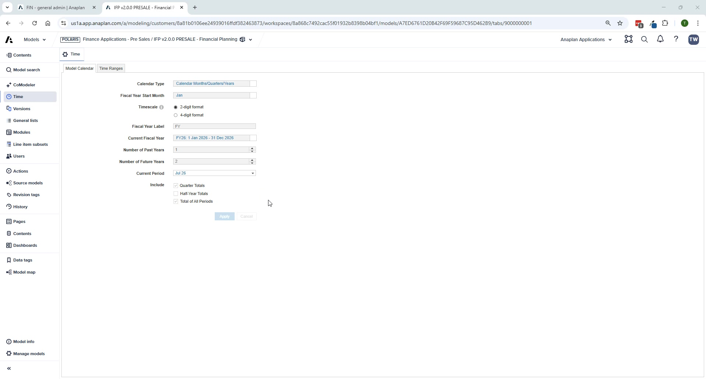

The Anaplan Way for Applications
Implementation methodology, delivery phases, and provisioning requirements
Getting StartedFoundation20 min
The Delivery Process Framework

- Requirements — Architect and customer agree on scope, dimensions, modules, and configuration choices
- Configure — Run the Application Framework wizard; answer all configuration questions
- Generate — Application models and UX are generated; review generation logs and fix issues
- Data Load & Publish — Import source data via ADO, sync with spoke models, validate
- Application Ready — UAT, user training, go-live sign-off
- Extend & Expand — Customer extends functionality, adds more applications, refines over time
IFP-Specific Delivery Phases
| Phase | Key Activities | Responsible |
|---|---|---|
| Discover | Requirements gathering, exclusion checklist, dimension decisions, scope agreement | Partner + Customer |
| Configure | Run App Framework wizard, answer all config questions, set hierarchy levels | Partner (with Anaplan PS support) |
| Generate | Deploy models via PAF, review logs, fix known generation issues | Partner |
| Post-Generation | Time/version setup, ADO pipelines, data load, UX validation, delete DEMO actions | Partner |
| Test | UAT with customer, data validation, variance checks, user training | Partner + Customer |
| Go-Live | Promote Dev → Prod via ALM, hand over admin responsibilities | Partner + Customer |
| Expand | Extensions, additional modules, or new applications | Customer + Partner |
Provisioning Requirements
Before configuring, ensure the following:
- Polaris workspace provisioned (minimum 100GB) — request via CSBP in Salesforce
- Delivery Request created in Salesforce (Application Delivery #1, #2, or #3)
- Finance Apps CoE added to workspace — email financeapplications@anaplan.com
The generating user must have all 4 roles in the tenant:
| Role | Purpose |
|---|---|
| Application Owner | Access to Applications URL |
| Workspace Admin | Full model access for generation |
| Page Builder | UX page creation and editing |
| Integration Admin* | ADO and data integration — must generate in default tenant |
🚨 Partner Tenant Requirement
Integration Admins can only generate in their default tenant. If you are a partner, work with your customer to obtain an Anaplan account whose default tenant is the customer's environment before attempting generation.